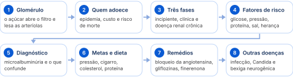
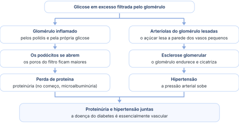
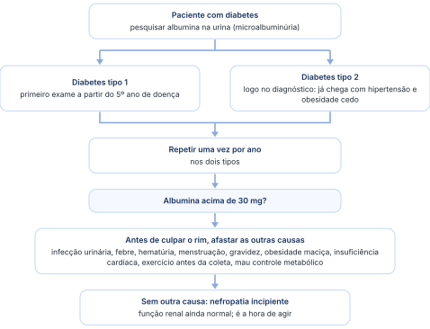
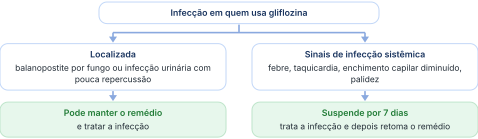

Como o açúcar em excesso lesa o glomérulo, como achar a lesão cedo pela microalbuminúria e como frear a doença com pressão controlada, dieta e os remédios que protegem o rim.
Organizada a partir da aula e dos slides, com a linguagem ajustada para leitura autônoma. A legenda de cores está na página 2.

O açúcar que sobra no sangue passa pelo filtro do rim. No caminho, inflama o filtro, que passa a deixar escapar proteína, e estraga as pequenas artérias do rim, o que faz a pressão subir. Por isso o diabético com o rim lesado tem proteína na urina e pressão alta.
A nefropatia do diabetes, também chamada de doença renal do diabetes, é a presença de proteína na urina (proteinúria) num paciente com diabetes tipo 2 de longa duração, com mais de 10 anos de doença, que vem acompanhada de retinopatia e de hipertensão. As lesões aparecem de preferência nos glomérulos, mas atingem também os túbulos e o interstício.
A glicose é filtrada pelo glomérulo, que forma a urina. O glomérulo funciona como um filtro com furinhos do tamanho certo para segurar as proteínas. No diabetes, o excesso de glicose e dos polióis (substâncias que a glicose em excesso forma) inflama esse filtro: os podócitos, as células que fecham os poros, se abrem, e a proteína escapa.
Ao mesmo tempo, o açúcar em excesso lesa as arteríolas do glomérulo. Elas cicatrizam e endurecem (esclerose glomerular), e isso gera hipertensão.

Quando o diabético tem uma consequência da doença, o que costuma aparecer é proteinúria e hipertensão, porque a doença diabética é essencialmente vascular. Ela pode atingir os nervos, e isso não é raro, mas o centro da lesão está nos vasos.
Tudo o que acontece no diabético com doença das artérias das pernas (arteriopatia periférica) acontece igualzinho no rim. A diferença é o calibre:
A lesão do diabetes também chega, claro, mas demora mais.
A lesão aparece mais cedo e é mais grave.
“Lembrem: a gente é um pool de artérias, né, no corpo inteiro.”
O número de diabéticos no mundo mais que triplicou em 14 anos. No Brasil, o diabetes já é a segunda causa de diálise, quase empatado com a hipertensão. Quando o rim adoece, o risco de morte dispara; o que mais protege é mudar os hábitos.
Olhar a epidemiologia é olhar o passado da doença para resolver o presente. Os números são do diabetes tipo 2, o diabetes do adulto, e quase lembram uma pandemia: não no sentido da palavra, mas no tamanho.
Em 2022 eram 537 milhões. No Brasil, pelos dados de 2025:
A nefropatia acomete, em média, menos de 35% dos diabéticos tipo 1 e de 10% a 40% dos diabéticos tipo 2.
O diabetes é a primeira causa de doença renal com necessidade de diálise nos países desenvolvidos, como os Estados Unidos. No Brasil é a segunda: a primeira é a hipertensão, mas o diabetes está quase empatado com ela. É um padrão que o país está copiando dos países desenvolvidos.
“Está nas nossas mãos, como profissionais de saúde, resolver isso. Nós precisamos tratar bem, e muito bem, os nossos pacientes para que não cheguem a ficar renais crônicos.”
Pelos dados do King's College, que acompanha os perfis de tratamento no mundo, o Sistema Único de Saúde gastou 57,7 bilhões de reais em 2015, com previsão de 97 bilhões de dólares em 2030. O tratamento ambulatorial do diabético pelo Sistema Único de Saúde custa cerca de 2.108 dólares por paciente, dos quais 1.335 são custos diretos.
O país tem remédios de última geração, de muita qualidade, inclusive na rede pública. O que falta é orientar bem o paciente.
A nefropatia é o motivo de se falar do diabetes como causa de doença renal: ela multiplica o risco de morte, um índice de mortalidade muito alto.
Nem todo diabético chega à nefropatia e à doença renal. Há dois motivos:
Parece haver um fator genético que protege alguns diabéticos das formas graves.
É onde entra o médico: quem muda a dieta, para de fumar e deixa o sedentarismo costuma evoluir muito bem.
Para deixar de ser sedentário.
Para a turma, o mais difícil ao cuidar de um parente diabético é a alimentação e o estilo de vida. Remédio existe: o que há de mais moderno está na rede pública. Hoje há muitos alimentos diet e light de fácil acesso no supermercado, de preferência os diet, que não têm açúcar. Na segunda enquete, só quatro mãos se levantaram: poucos parentes fazem exercício 5 vezes por semana, 30 minutos.
“Cabe a cada um de nós fazermos o trabalho de formiga de convencer os nossos parentes a cuidarem da sua alimentação. Eu vou pedir a ajuda de vocês na prevenção da doença renal.”
A doença avança em três fases. Primeiro escapa só um pouco de albumina na urina e o rim ainda funciona bem; depois sai muita proteína e aparecem outras complicações do diabetes; por fim o rim para e o paciente vai para a diálise. Quanto mais cedo se age, mais se freia.
A doença renal do diabetes tem três estágios clínicos: a nefropatia incipiente, a nefropatia clínica e a fase de doença renal crônica já instalada.
A primeira fase é marcada pelo aparecimento de microalbuminúria. No Brasil, o valor é guardado em miligramas: o normal é albumina menor que 30 mg; acima de 30 mg já é microalbuminúria. É a mesma tabela de três graus usada na hipertensão.
Escala sem proporção. O slide traz a microalbuminúria também como 30 a 300 mg em 24 horas ou 20 a 200 microgramas por minuto.
“Guardem esse número: menor que 30. Neste momento e na prova, o nosso limite é o que já está publicado, não é o in press que vai ser publicado talvez no ano que vem.”
A microalbuminúria aparece em 30% a 45% dos diabéticos tipo 1 com mais de 10 anos de doença e em 13% a 26% dos diabéticos tipo 2. Nessa fase só há perda de proteína, porque o glomérulo abriu um pouco: a função renal ainda está normal.
Sem tratamento, a microalbuminúria piora 20% ao ano e é sinal de mau prognóstico: quanto mais ela sobe, mais o rim está filtrando menos.
Uma curiosidade, somando os diabéticos tipo 1 e tipo 2:
A segunda fase é a proteinúria maior que 500 mg/dL. Ela costuma vir com outras complicações do diabetes: hipertensão em até 90% dos pacientes (73% a 90%, pelo slide), neuropatia periférica, neuropatia autonômica, retinopatia e cardiopatia isquêmica. É quando o diabetes está pior: não é só o rim que está doente, outros órgãos também sofreram com a falta de circulação causada pela doença.
Com mais de 7 a 10 anos de diabetes, esse paciente fatalmente evolui para insuficiência renal terminal e diálise. O que faz passar da nefropatia clínica para a doença renal crônica:
Algumas pessoas nascem com esse polimorfismo, um gene deficiente no rim que não responde ao tratamento com remédios. Elas evoluem muito mal e, por volta do sétimo ano de diabetes, já têm doença renal crônica. São raras: o mais comum é a piora pela pressão alta, pelo colesterol, por não parar de fumar e pelo erro na dieta.
Ao lado de um glomérulo normal, o glomérulo doente mostra uma lesão esclerosante fácil de enxergar. Não há diferença de lesão entre o diabetes tipo 1 e o tipo 2; são três tipos de lesão glomerular:
Os túbulos também podem ser atingidos, mas é menos comum: quando acontece, é por fibrose progressiva, infiltrado intersticial e até atrofia.
O que faz a lesão aparecer e piorar é, em grande parte, controlável: açúcar alto, pressão alta, excesso de proteína e de sal, cigarro e colesterol. A herança também pesa, mas não é algo que se meça no dia a dia.
Parece óbvio: com a glicose alta, a matriz extracelular se altera, principalmente pela via dos polióis, que aumenta o estresse oxidativo e hiperosmótico e leva à toxicidade direta do endotélio dos vasos. É uma inflamação direta, como se a glicose e seus metabólitos, principalmente os polióis, se depositassem e fossem roendo a parede do vaso.
Um bom controle glicêmico melhora 33% da microalbuminúria: um terço desses pacientes nunca teria doença renal crônica.
A hipertensão piora a microalbuminúria e é o fator promotor mais relevante da progressão da doença; o controle adequado retarda essa progressão.
“Controlar a pressão arterial no diabético é igual a evitar doença renal crônica.”
Dietas ricas em proteína e sal pioram a filtração glomerular e levam à doença renal crônica precoce. Por quê?
Um aluno respondeu cetoacidose: certo no pensamento, mas não é a resposta. Cetoacidose é o aumento da produção de cetoácidos pelo fígado quando a glicemia está muito alta. A resposta é a hiperfiltração glomerular.
Com proteína em excesso, o rim aumenta o fluxo no glomérulo para tentar eliminar o que não sabe eliminar sozinho: é a hiperfiltração glomerular.
O liquidificador bate bem massas leves; com massa pesada, as pazinhas tentam girar e não conseguem. O rim também sabe eliminar uma certa quantidade de proteína. Com proteína demais, ele faz um esforço que não dá resultado: é a hiperfiltração.
Em rins normais, essa lesão demora para acontecer. Em rins já doentes pela hipertensão ou pelo diabetes, o excesso de proteína e a maior reabsorção de sal pelo túbulo aumentam a pressão arterial e diminuem o fluxo sanguíneo renal. Por isso, controlar a ingestão de proteína é uma das bases do tratamento.
Controlar não é retirar. Não se retira proteína de ninguém: o certo é ajustar a quantidade por dia, para não haver excesso enquanto se trata a doença.
Há alterações cromossômicas associadas à nefropatia diabética ao longo do cromossomo 7 (no braço longo, no diabetes tipo 2, pelo slide) e no braço longo do cromossomo 3, no diabetes tipo 1. Ninguém dosa isso para fazer diagnóstico: serve para saber que existe um fator genético, responsável pela história familiar de diabetes e de hipertensão.
Hemoglobina glicada e hemoglobina glicosilada são o mesmo exame. Ele mede o histórico da glicose: o quanto de glicose ficou ligada à hemoglobina nos últimos meses, e não só a glicose que circula no momento. Daí o nome.
O exame resolve um problema antigo. O paciente controlava a glicemia por dois dias, colhia a glicemia de jejum e o resultado vinha normal, mas os outros órgãos pioravam, com retinopatia e nefropatia. A hemoglobina glicada mostra onde ele vinha errando antes.
A vasculatura do fundo de olho é a mesma que temos dentro do rim. Por isso, a retinopatia entra na lista: o que se vê no fundo de olho está acontecendo no rim, ao mesmo tempo.
“O rim é irmão do fundo de olho. Tudo o que acontece no fundo do olho acontece dentro do rim ao mesmo tempo.”
Todo diabético precisa fazer o exame que procura albumina na urina: o tipo 2 logo no diagnóstico, o tipo 1 a partir do quinto ano, e depois os dois uma vez por ano. Antes de culpar o rim, porém, é preciso afastar o que faz perder proteína por outro motivo.
No diabetes tipo 1, o exame é feito a partir do 5º ano de diagnóstico. No diabetes tipo 2, imediatamente, logo no diagnóstico. Nos dois, depois, o controle é anual.
Por que pedir logo no tipo 2? Porque o diabetes tipo 2 costuma vir com hipertensão e obesidade muito cedo: os fatores de risco aparecem mais precocemente.

O diabético pode ter outras situações que também causam microalbuminúria, e elas precisam ser afastadas:
Não valide um exame parcial de urina colhido durante a menstruação: ele não é um exame real. A mistura de sangue altera leucócitos, hemácias e proteína. Vale para qualquer exame de urina, não só no diabético.
As pessoas gostam de fazer exame na segunda de manhã. No fim de semana antes de qualquer exame de urina (parcial de urina ou microalbuminúria), nada de corrida extenuante nem de bicicleta por muito tempo, porque o exercício altera o resultado. Descansado, o exame de segunda sai mais real.
O tratamento começa pelo básico: pressão baixa o bastante, glicemia controlada, nada de cigarro e proteína e sal na medida certa. A proteína é controlada, nunca retirada, e dá para montar uma dieta sem passar fome.
As metas de pressão para o diabético mudaram com o tempo. Até 2003, o ideal era abaixo de 130x80 mmHg; em 2015, as diretrizes baixaram para 120x80 mmHg; e há previsão de metas ainda mais baixas para 2027 e 2028. Neste momento, valem as metas de 2015.
Com proteinúria (nefropatia clínica), a meta é mais baixa.
A prevenção primária passa pelo controle glicêmico ideal (o diabético precisa fazer dieta) e pelo controle da pressão. O controle intensivo da pressão evita que a fase incipiente, de microalbuminúria, evolua para a fase de macroalbuminúria, a proteinúria.
Evitar o tabagismo, com orientação educacional e encaminhamento a serviço especializado. Tabagismo não é só o cigarro comum: cigarro de palha, narguilé e cigarro eletrônico também contam, e o Ministério da Saúde chama todos de tabagismo.
A estatina ainda não mostrou melhorar a microalbuminúria: ela não evita a doença renal. Mas evita as outras doenças cardiovasculares do diabetes, nas artérias periféricas e no coração. Por isso, sim, é indicada.
A dieta hipoproteica reduz a microalbuminúria. Para não evoluir para doença renal, o diabético come pouca proteína, de preferência de alto valor biológico, e corta o sal:
Proteína por quilo de peso e sal por dia.
Com tudo isso junto, reduz-se muito a passagem da nefropatia clínica para a doença renal crônica.
Não. Faça a conta para um paciente de 70 kg: 0,8 vezes 70. Ele mantém as funções vitais, porque precisamos de proteína para viver, mas não come em excesso e não faz glomeruloesclerose.
0,8 g/kg/dia vezes 70 kg. Com isso, ninguém passa fome.
A carne vermelha não sai toda: entra, mas não todo dia, alternada com carnes brancas. A carne de porco também pode, porque dá para retirar a gordura de cima, tem pouca gordura entre as fibras e boa quantidade de proteína.
“É muito discutível como a gente faz dieta para paciente diabético e hipertenso para evitar doença renal crônica: manter a carga proteica de uma maneira em que nem se perca a função da proteína, nem se piore a função do rim. Precisa existir um equilíbrio.”
O remédio de base é o que bloqueia o sistema renina-angiotensina-aldosterona: um ou outro, nunca dois juntos. Por cima entram as gliflozinas, que jogam açúcar na urina, e a finerenona. Cada um traz um cuidado que o paciente precisa conhecer.
O controle da pressão arterial é, sabidamente, a medida mais eficiente para frear a progressão da doença. Várias classes de anti-hipertensivos podem ser usadas, mas as de escolha são as que bloqueiam o sistema renina-angiotensina-aldosterona.
Mesmo sem microalbuminúria, os dois são efetivos para controlar a progressão da doença.
Usar os dois juntos (duplo bloqueio) já pareceu proteger o rim, ao limitar os efeitos nocivos da angiotensina II, com ações complementares e não competitivas. Os estudos novos contraindicam essa associação.
Ou um, ou outro: inibidor da enzima de conversão ou bloqueador do receptor, nunca os dois ao mesmo tempo. Os dois têm as mesmas funções; juntos, aumentam o risco de hiperpotassemia (potássio alto) e, com ela, de arritmia e de morte.
Os inibidores do cotransportador de sódio e glicose tipo 2, as gliflozinas, já não são tão novos: têm cerca de 8 a 10 anos. Reduzem a progressão da doença renal.
Essas drogas participaram de um dos maiores estudos já publicados sobre rim e diabetes, o EMPA-KIDNEY (nome do estudo, de acesso livre na internet), que mudou o tratamento da doença renal do diabetes.

“Nós vamos começar um remédio para o senhor. Vai melhorar a função do seu rim, vai eliminar mais açúcar na urina, vai controlar o seu diabetes; diminui um pouquinho a circulação dentro do rim, então o rim filtra um pouquinho melhor. Mas, se o senhor tiver dor para urinar, a glande vermelha, desconforto, incontinência ou urgência para urinar, procure uma Unidade Básica de Saúde, porque nós precisamos tratar a infecção causada por esse remédio.”
É um remédio mais novo, com cerca de 4 anos (2 no Brasil), de nome comercial Firialta. É um antagonista seletivo e não esteroidal do receptor mineralocorticoide, um primo da espironolactona, que bloqueia muitos dos efeitos nocivos da superativação desse receptor, uma das principais causas de dano aos rins e ao coração. É cara, entre 140 e 180 reais a caixa, e não está no Sistema Único de Saúde.
Mesmo com menos tendência a causar hiperpotassemia, é obrigatório controlar o potássio toda semana em quem usa finerenona.
Além da nefropatia, o diabético tem mais infecção urinária, mais Candida na urina e pode ter uma bexiga que não esvazia direito. Tudo isso também pode piorar o rim.
O diabético pode ter outras doenças renais, que não são obrigatoriamente a perda de proteína e a evolução para insuficiência renal.
É a mais comum. Bacteriúria assintomática e infecções complicadas são três vezes mais comuns no diabético do que na população geral.
A Candida na urina é frequente. A regra é tratar a candidúria quando há sintoma. Lembre que a gliflozina, ao pôr açúcar na urina, facilita a infecção por Candida na mulher e a balanopostite por fungo no homem.
Em quem usa gliflozina, tratar a candidúria é obrigatório. Fique atento à candidúria nesses pacientes.
É uma complicação urológica do diabético. A musculatura da bexiga não consegue eliminar toda a urina: a bexiga fica distendida e sobra urina dentro dela (estase), o que facilita a infecção urinária e é uma das causas de piora da função renal.
Além da nefropatia, portanto, o diabético pode ter outras complicações no rim e nas vias urinárias.
Todos os pontos marcados com PROVA, na ordem da aula.
A doença do diabetes é essencialmente vascular: dá proteinúria e hipertensão, e aparece antes e mais grave nas arteríolas do rim.
Microalbuminúria é albumina acima de 30 mg (normal, menor que 30). Na prova, vale a tabela publicada de 2026.
Proteína e sal em excesso: hiperfiltração, dano capilar, depósito no mesângio e glomeruloesclerose. A proteína se controla, nunca se retira.
Hemoglobina glicada é a glicose ligada à hemoglobina: mostra o histórico da glicose, não só a do momento.
O rim é irmão do fundo de olho: com retinopatia, o mesmo está acontecendo no rim.
Microalbuminúria: tipo 2 logo no diagnóstico, tipo 1 a partir do 5º ano; depois, uma vez por ano.
Não valide exame de urina colhido durante a menstruação.
Metas: abaixo de 120x80 mmHg; com proteinúria acima de 1 g/dia, abaixo de 120x75 mmHg.
Dieta: 0,6 a 0,8 g/kg/dia de proteína (70 kg: 56 g por dia) e sal de 5 g/dia ou menos.
Bloqueio do sistema renina-angiotensina-aldosterona é a escolha, mesmo sem microalbuminúria.
Nunca inibidor da enzima de conversão com bloqueador do receptor: hiperpotassemia, arritmia e morte.
Gliflozinas agem no túbulo proximal; glicose na urina é esperada. Infecção localizada: mantém; sistêmica: suspende por 7 dias.
Finerenona: controle do potássio toda semana, obrigatório.
Candidúria em quem usa gliflozina: tratar é obrigatório.